Descubre Seúl:
historia, lugares y cultura
Seúl, la capital de Corea del Sur.
Una ciudad llena de historia milenaria, un centro vibrante de cultura pop y entretenimiento. Te enseñaremos desde palacios reales hasta los escenarios de tus series favoritas de Netflix, ¡explora todo lo que Seúl tiene para ofrecer!
Déjate cautivar por una de las ciudades más sorprendentes del mundo, empezando por esta web.
Explora Seúl
Descubre Seúl: el espacio donde la historia y la innovación se encuentran.
Lugares de interés
Explora los tesoros de Seúl: una ciudad llena de historia y cultura.
Conoce lugares de interés
Cultura Pop
Seúl en el mundo del entretenimiento: conoce las series y los idols que la han hecho reconocida a nivel mundial.
Conoce la cultura de SeúlEn Seúl, los contrastes son intensos: en un lado tienes estos rascacielos modernos y, en el otro, casas antiguas y colinas verdes. Es una ciudad que siempre se está reinventando, pero que sigue aferrándose a sus raíces.
- Bong Joon-ho, famoso director de cine surcoreano, ganador del Oscar por "Parásitos".
